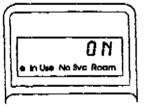
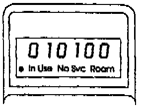
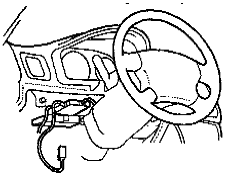
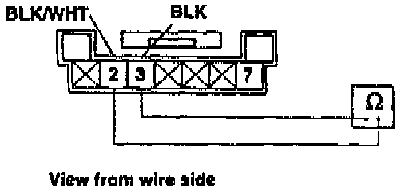
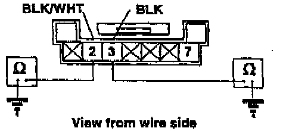
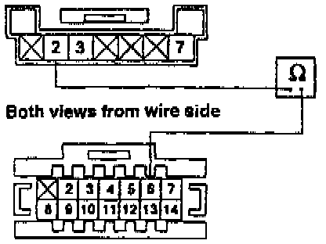
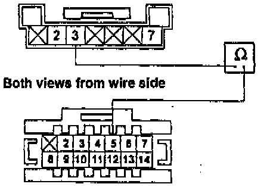
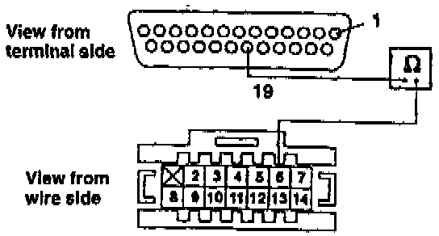
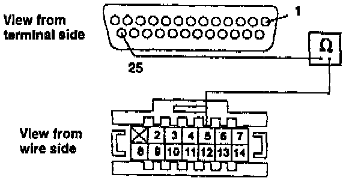
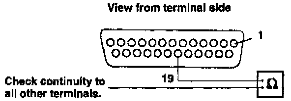

Hands-Free Speaker Is Inoperative
1. Before you begin, run the Components Check described on the first page and verify the problem.
2. Turn the ignition switch to I (Accessory). Then turn the phone on, and verify that it's unlocked. The handset display should read ON and stay ON throughout this test.
3. Verify the speaker problem by pressing keys on the handset and listening for tones. (You should also have heard a tone when you turned the phone on.)
4. With the handset, enter the programming mode of the Number Assignment Module (NAM) by pressing FCN + 0+6-digit security code + repeat the 6-digit security code + RCL (refer to the programming instructions at the end of this bulletin).

5. Scroll to step 10 by repeatedly pressing the * key. Does step 10 display "010100?"
Yes - Go to step 7.
No - Enter "010100." Hold down the * key until "01" appears in the display, then press the "Snd" key.
6. Press the keys on the handset and listen for the tones. Can you hear the tones through the speaker?
Yes - The hands-free speaker function is OK.[ ]
No - Go to the next step.

7. Remove the lower left dash panel so you'll be able to reach the connectors on the control box (mounted near the steering column).

8. Exit the programming mode by pressing * until 01 appears and press "Snd." Then, set the DVOM to ohms, disconnect the 7-P connector from the control- box, and check - resistance between terminals 2 and 3.
Is there about 4.5 ohms?
Yes - Go to step 10.
No - Go to the next step.
9. Disconnect the connector from the speaker (below the glove box), then check resistance between the terminals on the speaker.
NOTICE:
On LS and GS models, connecting the foot well light connector to the phone speaker will damage the speaker. Check the foot well light. If it doesn't work because its connector has been switched with the connector for the phone speaker, switch the connectors back where they belong.
Is there about 4.5 ohms?
Yes - Repair the open wire between terminal 2 or terminal 3 of the 7-P connector and the terminals in the speaker connector.[ ]
No - Replace the speaker.[ ]

10. At the control box 7-pin connector, check resistance between terminal 2 and ground, and terminal 3 and ground.
Is there continuity?
Yes - Repair short to ground.[ ]
No - Go to the next step.
The [ ] symbol indicates the end of troubleshooting for this symptom.

11. Reconnect the 7-P connector to the control box. Then, with the phone on, backprobe to check continuity between terminal 2 of the 7-P connector and terminal 6 of the 14-P connector while pressing any key on the handset.
Is there continuity for about 4 seconds after you release the handset key?
Yes - Go to the next step.
No - Replace the control box.[ ]

12. With the phone still on, backprobe to check continuity between terminal 3 of the 7-P connector and terminal 5ofthe 14-P connector while pressing any key on the handset.
Is there continuity for about 4 seconds after you release the handset key?
Yes - Go to the next step.
No - Replace the control box.[ ]

13. Turn the phone off and disconnect the 25-P connector from the transceiver and the 14-P connector from the control box. Then check for continuity between terminal 19 of the 25-P connector and terminal 6 of the 14-P connector.
Is there continuity?
Yes - Go the next step.
No - Repair open in the wire from the 25-P connector to the 14-P connector.[ ]

14. Check for continuity between terminal 25 of the 25-P connector and terminal 5 of the 14-P connector.
Is there continuity?
Yes - Go to the next step.
No - Repair open in the wire from the 25-P connector to the 14-P connector.[ ]

15. Check for continuity between terminal 19 of the 25-P connector and all the other terminals.
Is there continuity?
Yes - Go to the next step (to find the shorted wire).
No - Replace the transceiver.[ ]
16. Disconnect the DIN cable (13-P) connector at the control box and repeat step 15.
Is there continuity?
Yes - Go to the next step.
No - Replace the control box and harness (harness is not available separately).[ ]
17. Disconnect the other end of the DIN cable (at the transceiver) and repeat step 15 again.
Is there continuity?
Yes - Replace the power harness.[ ]
No - Replace the DIN cable.[ ]